Opening: produk harus mengambil alih layar
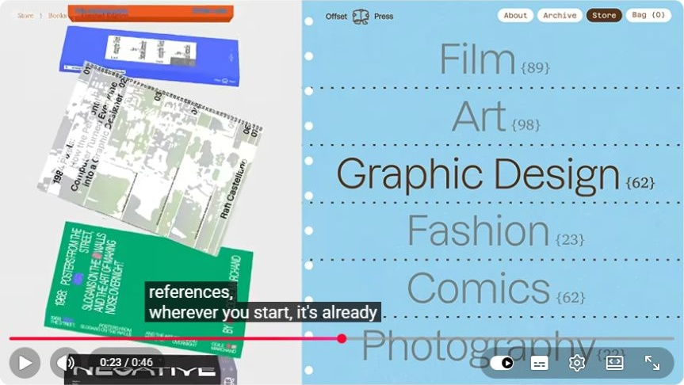
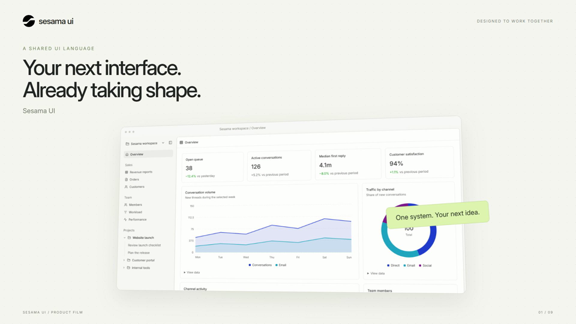
Yang terlihat di referensi
Base44 memenuhi frame dengan interface: buku, kategori, tipografi, dan warna merupakan bagian dari produk yang sedang diperlihatkan.
Kelemahan draft
Sesama menempatkan screenshot kecil di bawah judul dua baris. Area kosong dan bingkai lebih dominan daripada detail interface. Hook terasa seperti pembuka presentasi.
Arah revisi v2
Mulai dari close-up aksi Create project, lalu tarik kamera untuk mengungkap workspace. Tahan headline maksimal 3–5 kata. Biarkan UI mengisi sekitar 75–90% frame sebagai target komposisi, bukan pengukuran referensi.
Komponen → halaman: tunjukkan hubungan sebab-akibat
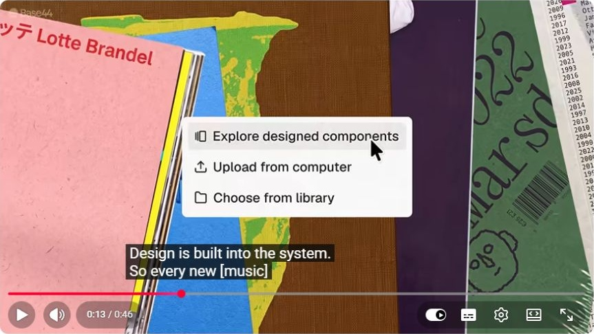
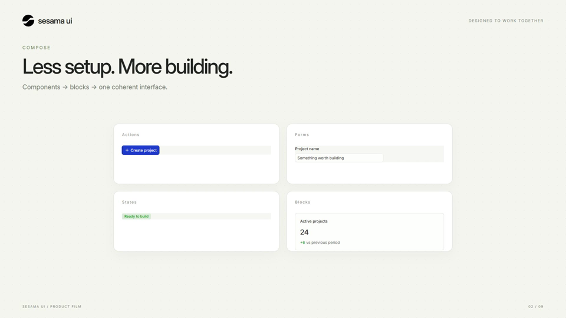
Yang terlihat di referensi
Menu Explore designed components hadir di atas materi proyek yang sama. Fitur tetap terhubung dengan konteks halaman yang dibuat.
Kelemahan draft
Empat kartu komponen Sesama menghilang lalu dashboard muncul. Tidak terlihat komponen mana yang menjadi bagian mana pada dashboard; kesan merakit interface belum terbukti secara visual.
Arah revisi v2
Pertahankan identitas elemen: tombol berpindah ke header, field ke dialog, badge ke tabel. Akhiri dengan halaman lengkap. Pakai komponen canonical dan animasikan wrapper-nya.
ESM: klaim teknis perlu hasil visual

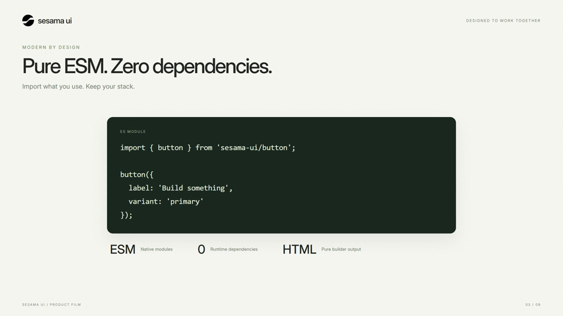
Yang terlihat di referensi
Empat arah desain berada di atas latar identitas visual besar. Penonton langsung melihat variasi hasil, bukan hanya penjelasannya.
Kelemahan draft
Blok kode dan tiga label menjelaskan ESM, tetapi tidak menunjukkan manfaatnya pada interface. Ini jeda informatif yang memperlambat cerita produk.
Arah revisi v2
Tampilkan import singkat sebagai overlay dekat tombol yang sedang dibuat. Potong dari kode ke hasil pada posisi yang sama. Pertahankan zero runtime dependencies sebagai satu proof point singkat.
Framework agnostic: satu hasil, beberapa lingkungan
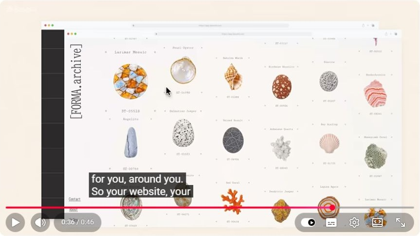
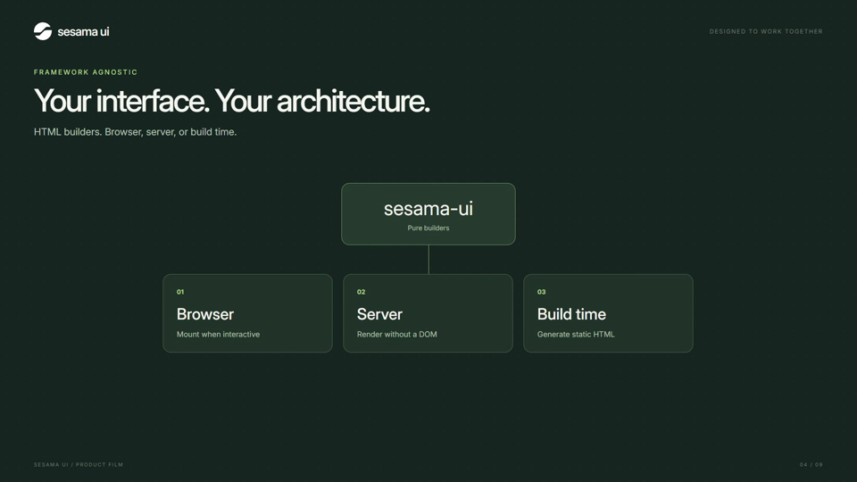
Yang terlihat di referensi
Montage akhir Base44 mengganti karakter website secara nyata. Variasi output membuat cakupan produk terasa luas.
Kelemahan draft
Diagram Browser / Server / Build time adalah tiga kartu statis. Ia mendeskripsikan portabilitas tanpa memperlihatkan hasil yang konsisten.
Arah revisi v2
Bawa interface yang sama melewati tiga konteks: browser, HTML hasil server, halaman hasil build. Hindari logo framework atau adapter yang belum didemokan. Teks cukup Render anywhere.
TypeScript: berikan satu momen penemuan
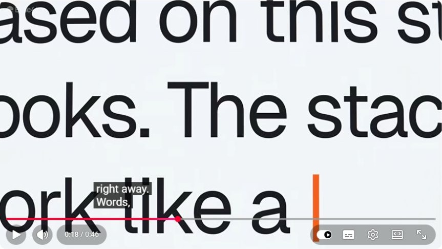
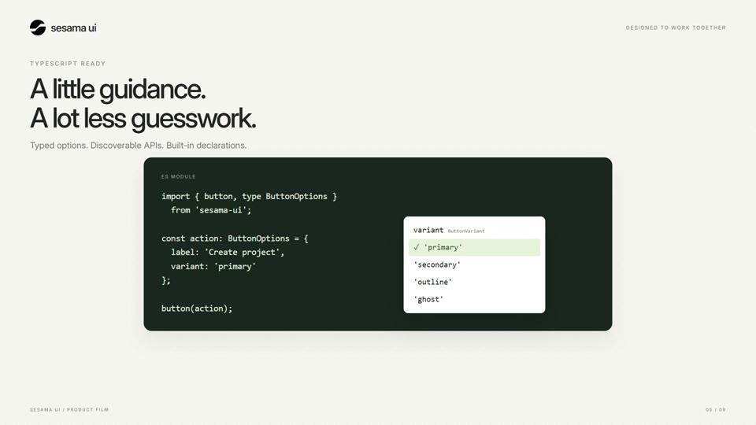
Yang terlihat di referensi
Teks prompt dibesarkan sampai memenuhi frame. Detail input menjadi pusat perhatian sebelum berpindah ke hasil.
Kelemahan draft
Autocomplete Sesama langsung tampil sebagai panel statis. Tidak ada pilihan yang dipilih atau perubahan hasil, sehingga hubungan tipe dengan kecepatan kerja kurang terasa.
Arah revisi v2
Close-up pada variant, tampilkan opsi yang valid, pilih primary, lalu match-cut ke tombol sebenarnya. Tandai sebagai ilustrasi editor; dukungan yang benar adalah deklarasi TypeScript bawaan.
Tema: transformasi yang sama lebih kuat dari dua poster
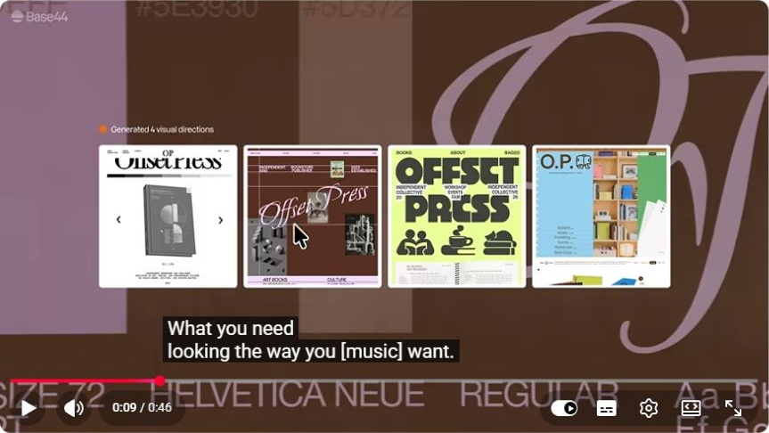
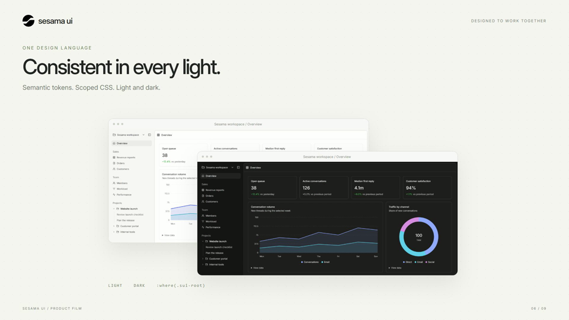
Yang terlihat di referensi
Pilihan visual Base44 ditempatkan sebagai alternatif dalam proyek yang sama, dengan palet dan tipografi sebagai bagian dari komposisi.
Kelemahan draft
Dua screenshot light/dark bertumpuk membuktikan keberadaan tema, tetapi tidak menunjukkan transisi atau cara sistem menjaganya konsisten.
Arah revisi v2
Gunakan satu dashboard pada skala besar. Perlihatkan kontrol tema lalu ubah token pada geometri yang tetap. Zoom singkat pada badge, field, dan tabel yang ikut menyesuaikan. Jangan mengesankan scoped CSS kebal terhadap CSS host.
Perilaku: perlihatkan interaksi, bukan simbolnya
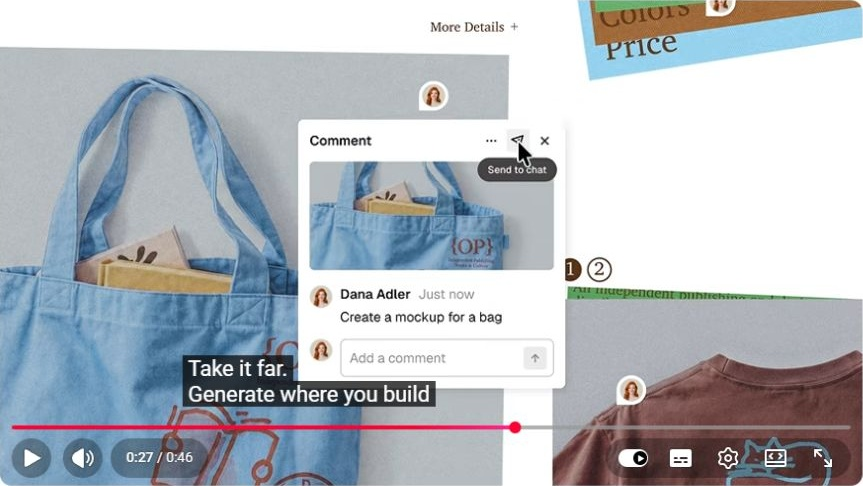
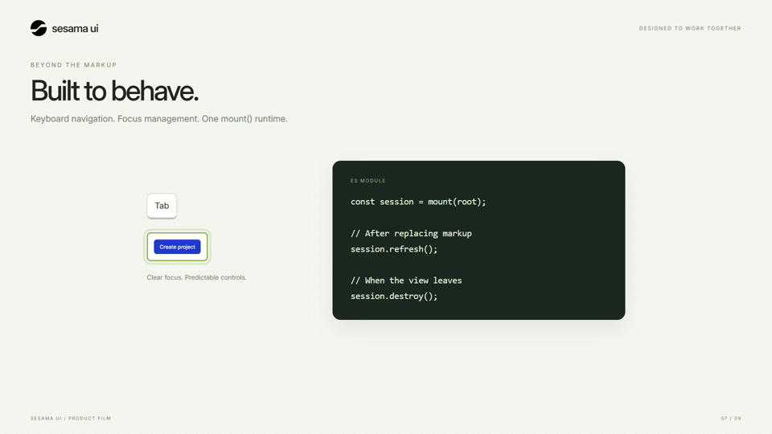
Yang terlihat di referensi
Komentar ditempelkan pada gambar tas, dengan aksi Send to chat. Objek, instruksi, dan tindakan berada dalam satu konteks.
Kelemahan draft
Tombol Tab dan focus ring Sesama hanya ilustrasi. Panel lifecycle mengambil separuh visual, sementara interaksi yang dijanjikan tidak diperagakan.
Arah revisi v2
Rekam atau orkestrasi kontrol asli: Tab → fokus, Enter → dialog, Escape → kembali ke pemicu. Tampilkan mount() singkat sebagai penjelas setelah bukti interaksinya, tanpa klaim sertifikasi aksesibilitas.
Moat: kaitkan dengan workflow yang bisa dipercaya
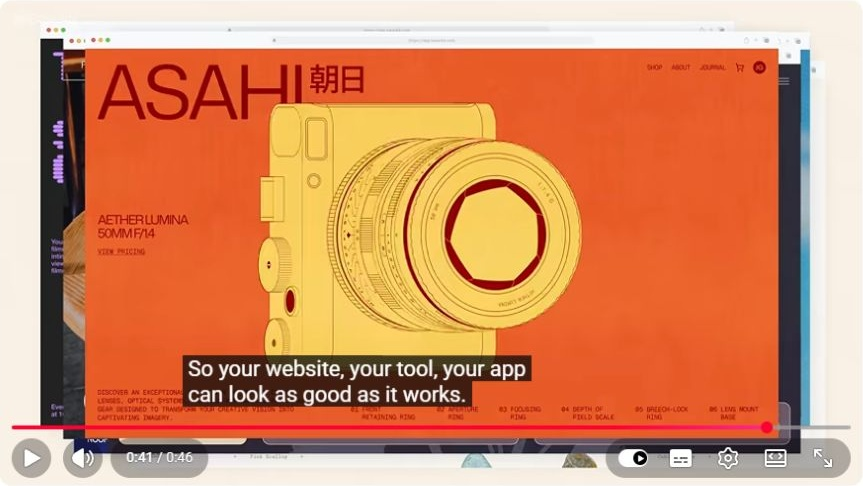
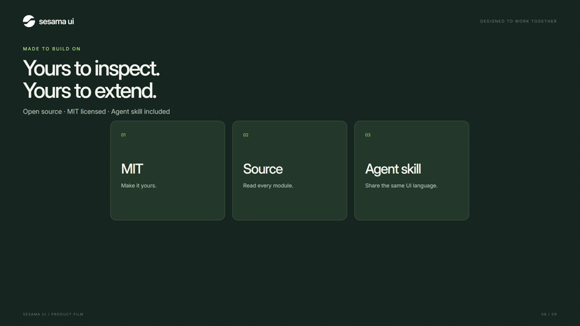
Yang terlihat di referensi
Montage Base44 memperlihatkan hasil dengan identitas visual berbeda, termasuk website produk kamera yang kuat secara warna.
Kelemahan draft
Tiga kartu MIT / Source / Agent skill terasa seperti daftar fitur lain. Nilai kombinasi sistem desain, blocks, dan panduan agent belum terlihat.
Arah revisi v2
Perlihatkan agent membaca skill lalu memakai builder yang sama untuk menambah satu panel pada workspace. Labeli sebagai alur demonstrasi jika bukan integrasi live. MIT dan source tampil singkat sebagai dukungan kepemilikan; bukan klaim moat eksklusif.
Penutup: satu pesan, satu tindakan
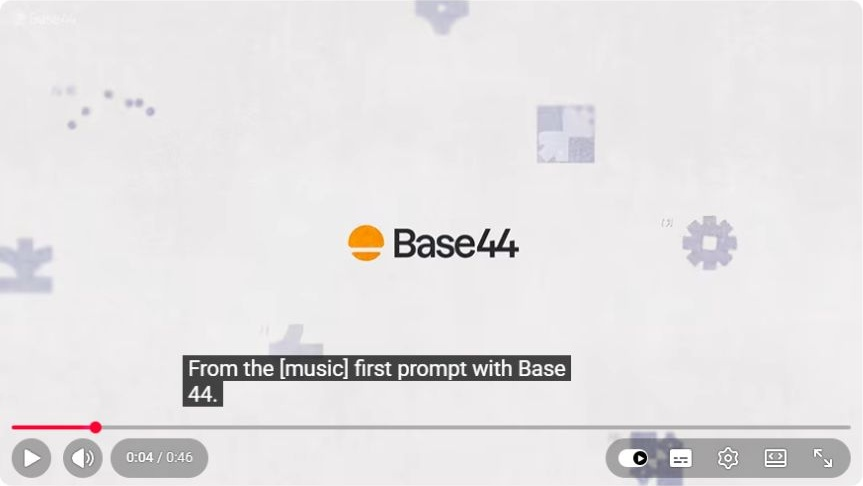
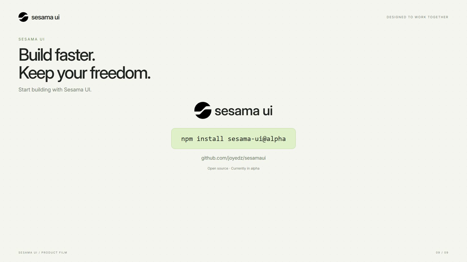
Yang terlihat di referensi
Frame identitas Base44 pada pembukaan mengisolasi logo di bidang terang. Ini pembanding komposisi brand, bukan screenshot penutupnya.
Kelemahan draft
Sesama menampilkan logo header, headline, logo kedua, perintah install, URL, dan label alpha sekaligus. Terlalu banyak titik perhatian pada penutup.
Arah revisi v2
Sederhanakan menjadi satu logo, Build faster. Keep your freedom., dan npm install sesama-ui@alpha. Hapus footer editorial dan nomor scene dari versi iklan. Pertahankan status alpha sebagai catatan kecil.